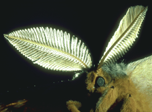

Antheraea polyphemus, male antennae
Return to Dominick Home Page

Each antenna of the male Antheraea polyphemus has about 50,000 sensory hairs, each containing two olfactory neurons. The sensory hairs are what are catching the light in the picture. The chemical compositions of the sex-pheromones of A. polyphemus and its sibling species A. pernyi are known.